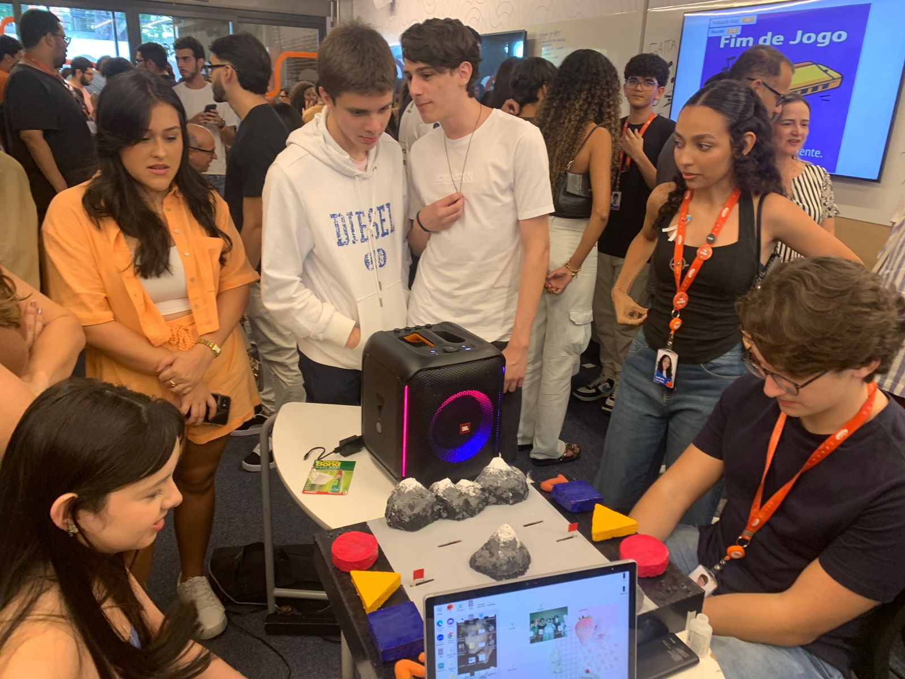
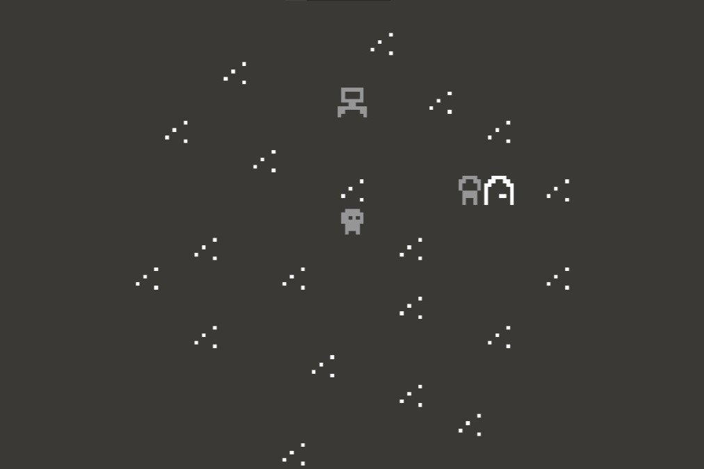

Trilha Sonora
Descrição: Jogo de tabuleiro acessível para pessoas com deficiência visual, com tecnologia embarcada e sons.
Objetivo: Proporcionar uma experiência inclusiva e educativa baseada em design universal.
Tecnologias: Arduino, C, C++.
GitHub: Acesse o repositório
404: Fragmentos de um Jogo Esquecido
Descrição: Jogo narrativo feito no Bitsy que explora glitches, memórias corrompidas e a sensação de estar perdido num jogo esquecido.
Objetivo: Criar uma experiência poética e sensorial sobre tempo, memória e falhas digitais.
Tecnologias: Bitsy, pixel art, Game design.
Itch.io: Jogue no Itch.io